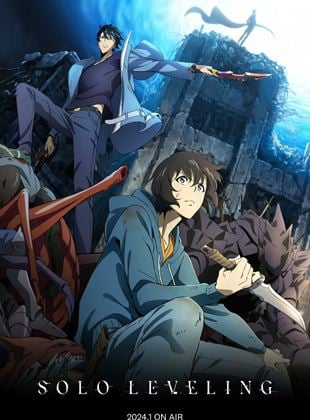

Solo Leveling is about a guy named Sung Jin-woo. He is a hunter. He hunts the monsters inside these gates that spawn all over the world. There are different rankings based on how much power each hunter has. Such as E Rank, D Rank, C Rank, B rank, A Rank, S Rank and the strongest and rarest of them all National-Level Hunters. He started off as an E-Rank and became stronger than any other hunter.
This was chosen as my #2 because this anime takes a hero with no power and gives him more power than anyone could ever imagine.
Public Domain
You've reached the bottom of this page!
Would you like to return to Home?
If not you can go to the next pages here:
Chainsaw Man
Black Clover
Dragon Ball
One Punch Man